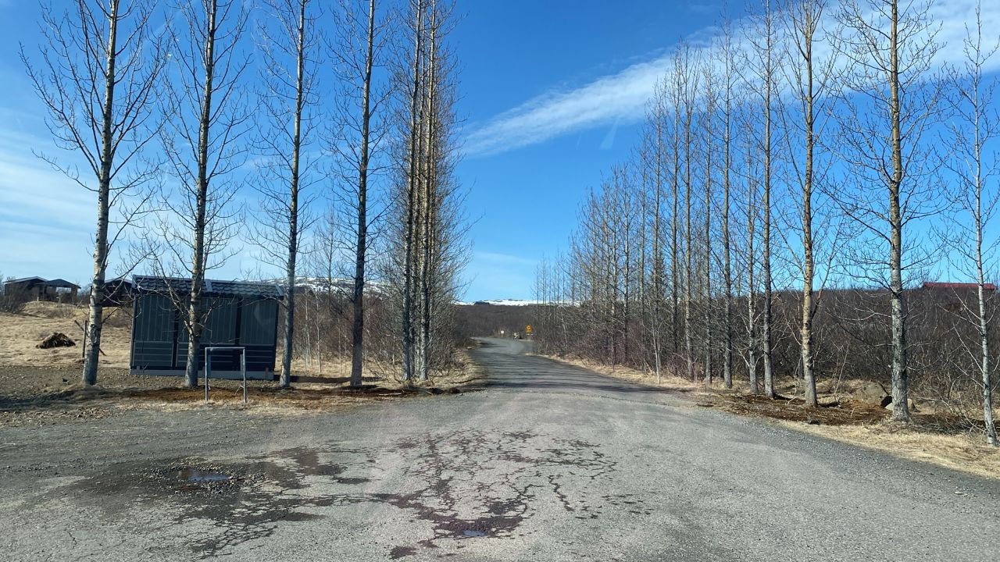

Real Story · 中文
Strokkur Geyser — double explosion.
30 April 2024，来到 Strokkur Geyser。 那天很 lucky，看到 double explosion。
Geyser 的特别是：你知道它会喷， 但你不知道 exactly 什么时候喷、喷多高、会不会再来一次。 所以每个人都站在那里等。 一喷出来，全部人都像一起被 Iceland 吓醒。
Úthlíð Cottages
30/4 overnight at Úthlíð Cottages.
那晚，我 overnight at Úthlíð Cottages。 在 Iceland，每一天的景点都很大， 但晚上还是要找到一个可以停下来、恢复身体的地方。

English Memory Summary
A geyser that made everyone wait, then wake up.
On 30 April 2024, Tuzi visited Strokkur Geyser and witnessed a double explosion. The moment carried the suspense of Iceland’s geothermal landscape: everyone waited, watched, and reacted together when the water erupted.
That night, Toyotaki rested at Úthlíð Cottages.
Heart Statement
有些自然景观不是静静给你看，而是突然把你叫醒。
Strokkur did not just show water. It showed timing, pressure, surprise, and the joy of being lucky enough to see it twice.